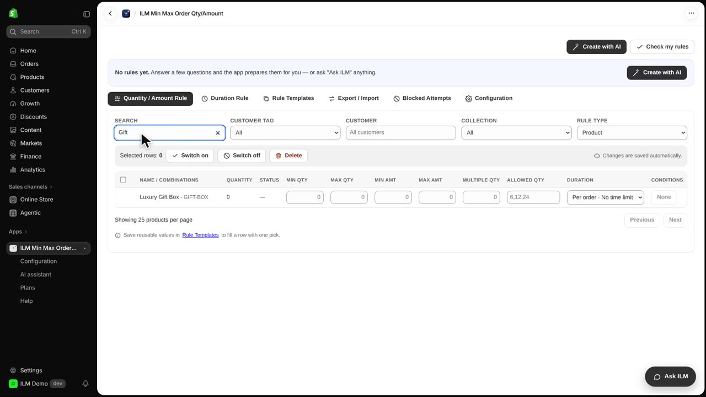
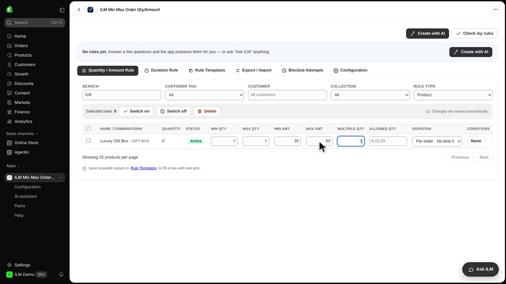
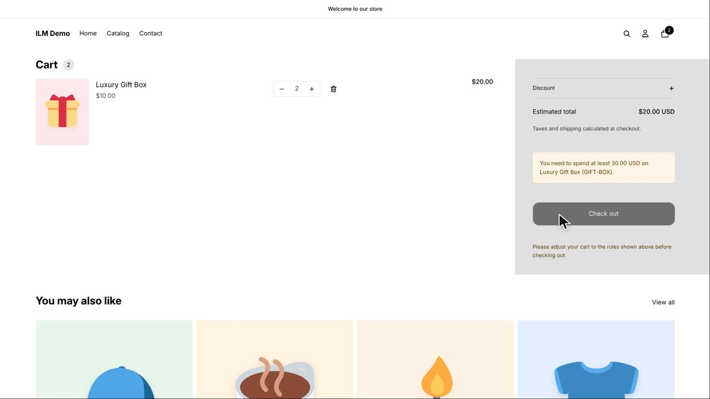
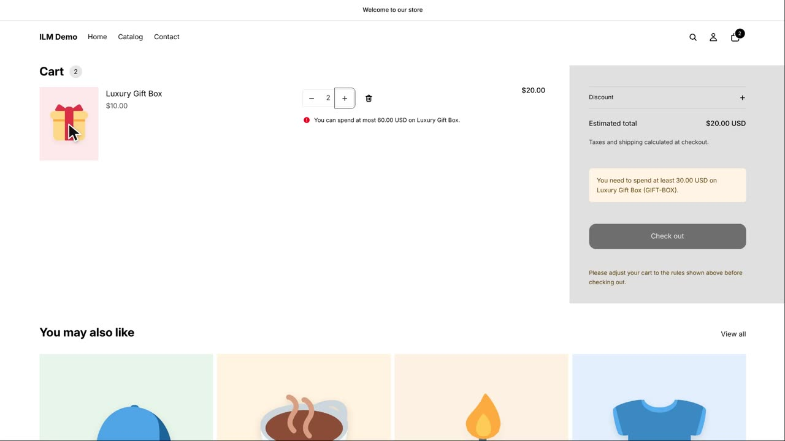
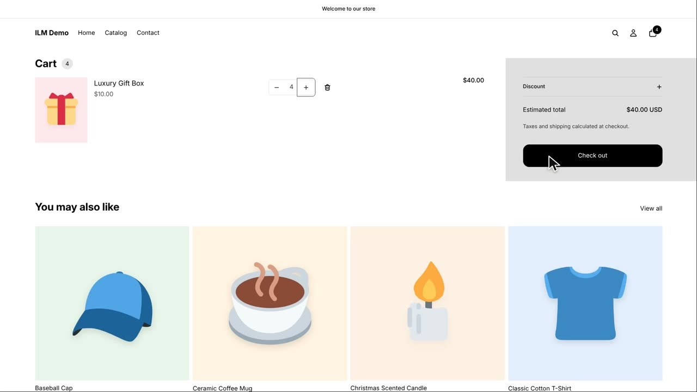

Amount limits let you control how much money a shopper must spend on a product, rather than how many items they buy. This is perfect for gift boxes, premium items, or wholesale-style products where you want a minimum spend and a maximum cap. In this lesson, the Luxury Gift Box costs ten dollars, and we will set a minimum of thirty dollars and a maximum of sixty dollars. Watch how the cart reacts when a shopper tries to buy too few or too many.
First, we search for the Luxury Gift Box in the product list. The search finds it quickly so we can open its settings.

Now we type thirty into the Min Amt field and sixty into the Max Amt field for the Luxury Gift Box. These amounts are in your store currency, so thirty means thirty dollars. This means a shopper must spend at least thirty dollars and no more than sixty dollars on this product.

We add two Luxury Gift Boxes to the cart, which comes to twenty dollars. That is below the thirty dollar minimum, so the cart shows a notice telling the shopper how much more they need to spend. The checkout button is locked, so they cannot proceed until they meet the minimum.

Next, we try to change the quantity to seven boxes, which would be seventy dollars. That is above the sixty dollar maximum, so Shopify refuses the change and the cart keeps the last valid quantity. The shopper sees that the quantity did not update, and the cart stays within the allowed amount.

Finally, we set the quantity to four boxes, which comes to forty dollars. That is between thirty and sixty, so the rule is satisfied and the checkout button becomes active. The shopper can now complete their purchase.
